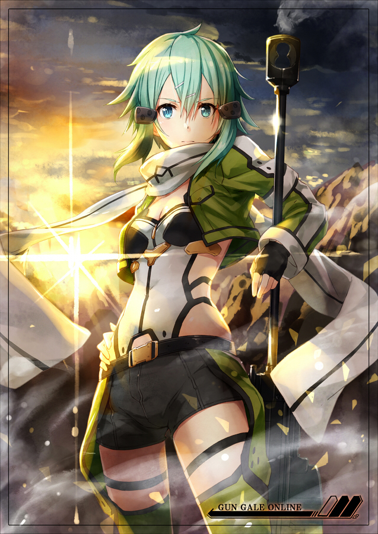

简介：
声优：泽城美雪
年龄：16
武器：反器材狙击步枪·PGM Ultima Ratio Hecate Ⅱ（主武器）、冲锋枪·HK MP7（副武器）（GGO）;光弓·Shekinah（ALO）;长弓·Annihilate Ray（UW)
称号：冰之狙击手
幽灵子弹篇的女主角。
五年前被卷入强盗事件，错乱中枪杀了威胁母亲的抢匪而留下心灵创伤。患有强烈的枪械恐惧症,在学校也被称为杀人凶手而遭人霸凌。希望克服这个阴影而在朋友新川恭二介绍下加入枪战游戏GGO,成为了可排入前五名之内的狙击手. 初遇桐人时曾误认他是女性，故在得悉事实后十分生气，而见识到他的强大后希望打败他以克服心理障碍。在回想起「微笑棺木」而动摇的桐人身上看到自己过去的影子，推测桐人有与自己相似的过去。后来在桐人的帮助下摆脱了长久以来的阴影，协助其击败了“死枪”，并且喜欢上了桐人。
“死枪”事件后在桐人的邀请下转换到了ALO中，角色为猫妖精，擅长使用弓箭狙击。在小说第八卷中使用技能帮助桐人获得圣剑·Excalibur。 Alicization篇中为了支援亚丝娜，通过菊冈给予GM帐号“太阳之神·索尔斯”登入Under
World。